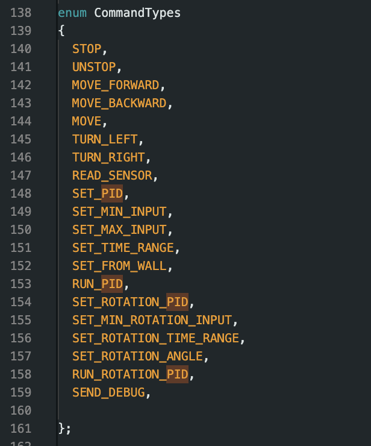

Overview of Lab 6
The goal of lab 6 was to implement a PID controller for angular position. This lab was similar to the linear position PID controller, but there were some new considerations that needed to be handled and the overall controller was improved.
Prelab
Similar to lab 5, a set of commands was developed for rotational PID control. To handle debugging the car, the same debug commands were used as in lab 5. The debug commands now included a data request for pitch, roll, and yaw.

Section 1: Getting Sensor Data
Unlike lab 5, the sensor used for this controller was an IMU. The IMU has a built-in gyroscope that can be integrated to calculate the yaw of the car. Initially, I implemented the orientation controller using the gyroscope and a low-pass filter to eliminate noise. However, I discovered that there were issues with accuracy and drift, so I decided to switch to using the DMP firmware on the IMU that uses sensor fusion to calculate quaternions for orientation. This proved to be much more accurate and reliable. Based on the documentation, the predicted sample frequency for this method is 55Hz. In practice, I also got 55Hz when I isolated the code for quaternion calculation. It is also important to note that the gyroscope, which is incorporated into the DMP calculations, can detect a maximum of ±2000 degrees per second according to the documentation. In this application, the car rotates at less than 2000 dps, so the sensor is sufficient for our purposes.
Section 2: Designing the PID Controller
The main structure of the orientation PID controller was similar to the positional PID controller. Like the positional controller, the sensor data and PID loop were decoupled and the orientation was linearly extrapolated when the sensors did not have data. I also applied a minimum input to prevent a deadband region. Unlike positional control, I had to handle for wrapping values in angular control that would always move the car in the most efficient direction. This was done using a series of fmod functions. Improving on the previous design, I designed a damper that would cause the car to break with varying strength depending on the angular velocity and error. I then designed a low pass filter for the derivative term to avoid spikes in the input from derivative kick. Finally, I used Ziegler-Nichols to tune the PID parameters. After initial tuning and readjustment, I settled on Kp = 0.6, Ki = 0, and Kd = 0.02. The Kp term was just enough to quickly return to the car to its original position without overshooting too much. Meanwhile, the Kd term prevented the car from accellerating too much if it was far away from its target, smoothening out the control. I tried playing around with Ki values, but they didn't improve performance by much and often caused small oscillations around the target angle due to the imprecisions of the IMU that were undesirable.
Section 3: Optimizing the Code
To optimize and improve the code, I implemented the PID loop such that I could adjust the gains while the robot is running. This was done by using the loop() function in Arduino as the main loop that runs PID, and controlling everything through flags. This would allow the write_data() and read_data() functions to run in parallel with the PID loops. This is especially important for future applications where parameters need to be changed during navigation and stunts. To test the performance of the car, I plotted the angular position vs time and the input vs time. I have not tried combining the positional control and orientation control, but in the future this should not be to difficult. One consideration is orientation during backwards and forwards motion, which can be handled with flags that revers the input to the motors.